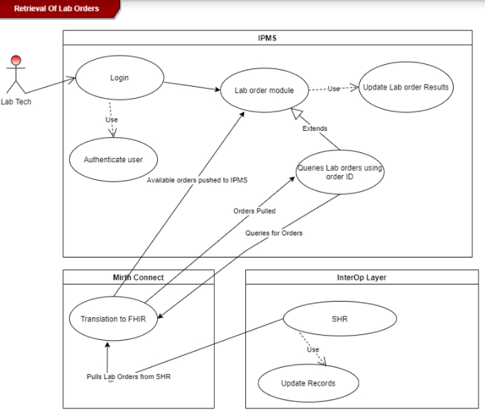
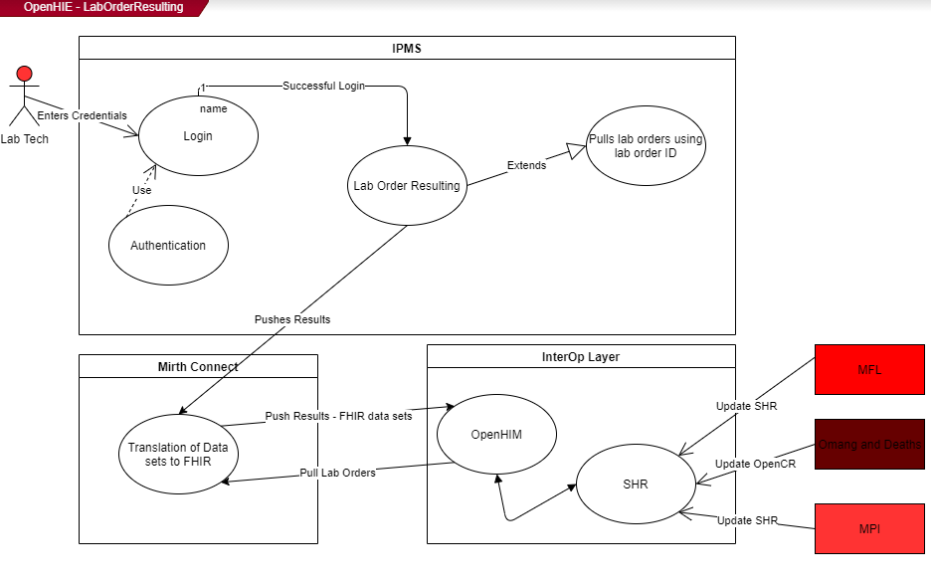
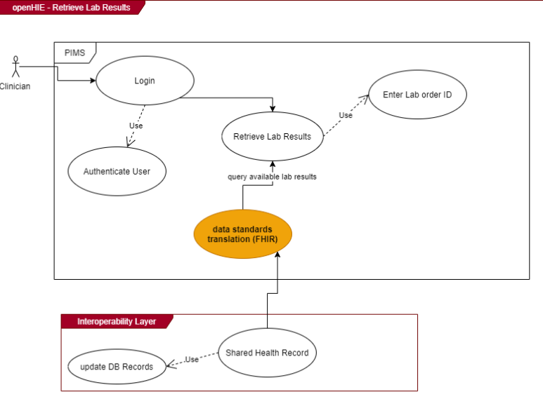

Botswana Laboratory HIE Workflow Implementation Guide
0.2.0 - ci-build
Botswana (BWA)

Botswana Laboratory HIE Workflow Implementation Guide
0.2.0 - ci-build
Botswana (BWA)

Botswana Laboratory HIE Workflow Implementation Guide - Local Development build (v0.2.0). See the Directory of published versions
ACTORS: Clinician
DEPENDENCIES:
DESCRIPTION:
Clinician login the system and access the lab module. Clinician then enters Lab specimen details using a lab form available in the lab module.
PRE CONDITION:
1: User successfully logs in to the system
ORDINARY SEQUENCE:
Steps:
2: Log into the system.
3: Access the Laboratory module.
4: Enter specimen details in lab order form available in the lab module.
5: Save the order details.
6: Send the lab order details to SHR
POST CONDITION:
EXCEPTIONS:
Steps:
3: Where the patient does not exist, the clinician creates the patient before paturing the order.
6: System caches the lab order details when there is network failure and resend late
ASSUMPTIONS:
COMMENTS:
ACTOR/s: Laboratory technicians
Dependencies:
Description:
The use case enables laboratory technicians to enter lab order details into IPMS at the laboratory facility
Pre-condition:
1: User successfully logs in to the system
Ordinary sequence
Step: Action
2: Access the Lab Order component/module
3: Access lab order details in to IPMS
4: Update order details with lab test results
5: Save the updated lab test results.
Post-condition
Assumptions
Some orders will be entered directly in to IPMS at the facility Exceptions
Step:
Action
2: Enter/Capture the lab order
Comments
ACTOR/s: Clinicians
DEPENDENCIES:
DESCRIPTION:
This use case enables clinicians to retrieve lab order results at the facility and have the option to print out the results.
PRE-CONDITION:
- Log into the system
Ordinary sequence
STEPS:
> ACTIONS:
- Access the Lab Order module
- Search lab test results using lab order ID or Patient ID.
- Open the selected results and consult with the patient
- Print results out (optional)
POST-CONDITION:
ASSUMPTIONS:
EXCEPTIONS:
STEP/s:
> ACTIONS
- Access the results using the client module
Comments
ACTOR:
PIMS, IPMS, OpenHIM, SHR, OpenCR
DEPENDENCIES:
Active connection to interoperability layer
DESCRIPTION:
An interoperability layer facilitates information exchange of clinical laboratory orders between the electronic medical record and the laboratory information system, via the longitudinal record system (SHR).
PRE-CONDITION:
Queries are sent between interfacing systems and the interoperability layer to update and store new data.
Ordinary sequence
Steps:
Actions:
1. PIMS/IPMS send captured orders to the interoperability layer and store them in the SHR
2. MFL update the facility information in the SHR
3. Patient demographic data is queried from the omang system as well as the deaths and births register.
4. Updated lab order details with results are received by the interoperability layer and stored in the SHR
5. PIMS pings the interoperability layer for lab test results
6. Available results in the SHR are pulled to PIMS.
POST-CONDITION:
ASSUMPTIONS:
EXCEPTIONS:
Steps:
Actions:
6. Unidentifiable orders and order results sent to the interoperability layer are rejected
COMMENTS




